Title — Sequence Modeling in Financial Services. Nam Nguyen, AI Foundations @ Capital One.
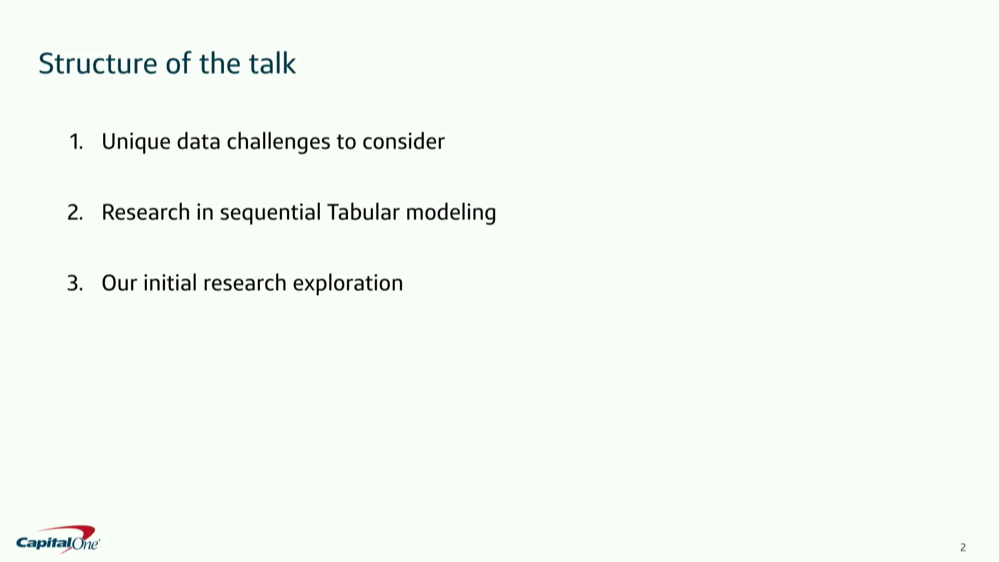
标题页：金融服务中的序列建模。讲者 Nam Nguyen，Capital One · AI Foundations。
引言与议程
[00:14 – 00:51]
So, today we'll talk about sequential modeling in financial services. And the structure of the talk will start with some of the unique challenges that we will consider in the financial service, especially the data, some of the research in sequential tabular modeling, and some of the research exploration in this space. So, when we think about the problem in industrial services or in many other industries, customer data is handled in sequential.
因此，今天我们将讨论金融服务中的顺序建模。演讲的结构将从我们将在金融服务中考虑的一些独特挑战开始，特别是数据、顺序表格建模的一些研究以及该领域的一些研究探索。因此，当我们考虑工业服务或许多其他行业的问题时，客户数据是按顺序处理的。
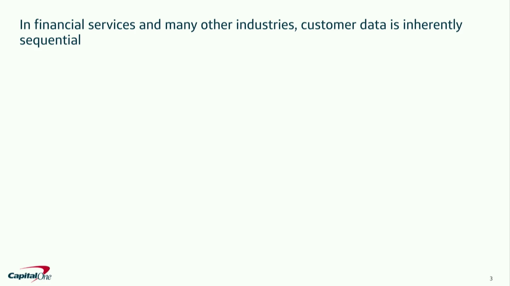
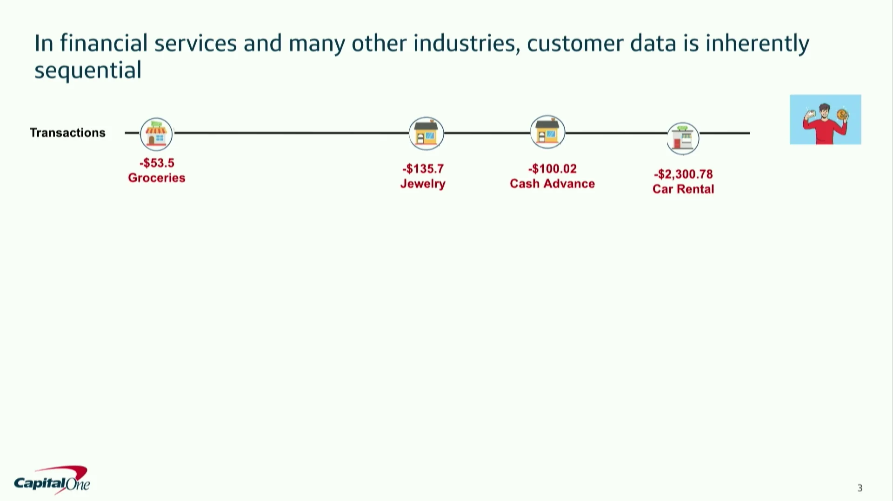
[00:51 – 01:26]
So what I mean by that is that if you have, in banking domain, if you have a customer interacting with a credit card or use a credit card, you will observe a series of different transitions that are happening over time. And each transaction is considered as an event that contains multiple attributes. For example, in this case, you have transaction amount, the type of transaction, whether the customer goes into transaction.
所以我的意思是，如果在银行领域，如果您有客户与信用卡交互或使用信用卡，您将观察到随着时间的推移发生的一系列不同的转变。每笔交易都被视为一个包含多个属性的事件。例如，在本例中，您有交易金额、交易类型、客户是否进行交易。
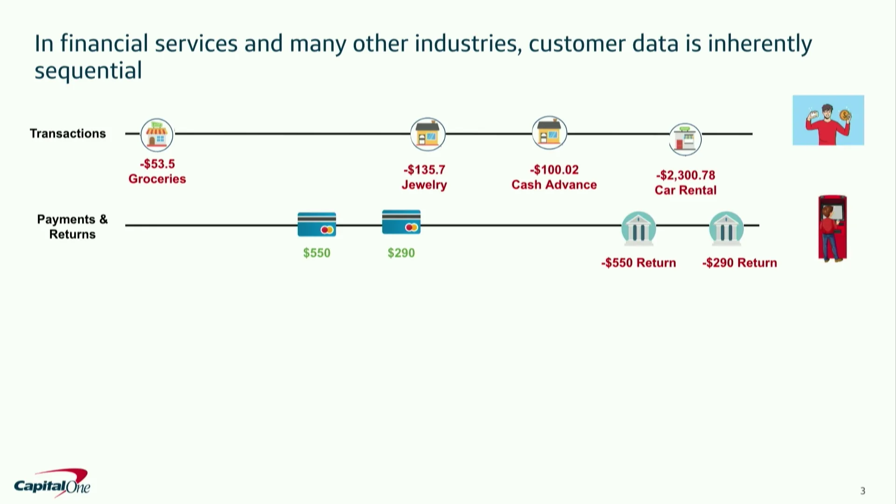
[01:26 – 02:01]
For another event stream, you may see that the type of payments, that is less frequent, that is the payment event where customer make a payment, the amount of the payment, whether payment is made online or offline, or also in return where the customer return, what type of return is that. And another type of activities you may see is that going through digital activities where customer check the balance, going to the mobile platform, check the balance, making
对于另一个事件流，您可能会看到支付类型，不太常见，即客户进行支付的支付事件，支付的金额，是在线支付还是线下支付，或者还有客户在哪里退货，退货类型是什么。您可能会看到的另一种类型的活动是通过数字活动，客户检查余额，进入移动平台，检查余额，
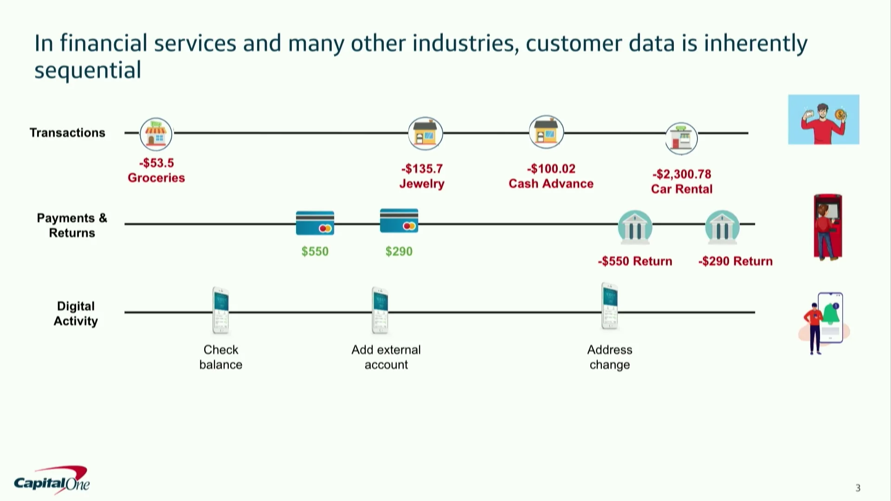
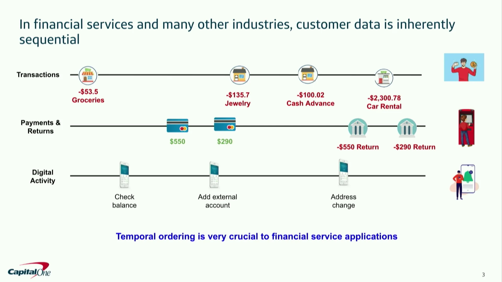
[02:01 – 02:36]
it a payment, for example, chain address, so on and so forth. So in those scenarios, we have data that is really temporal, real temporal, and the ordering of the temporal events are very crucial in financial services application and also very important in many other cases. And the temporal ordering can sometimes be related to causal relationship cost events. For example, before the customer making a transaction, they may go into digital platform
它是一种支付，例如链地址等等。因此，在这些场景中，我们拥有真正时态的数据，实时事件的排序在金融服务应用程序中非常重要，在许多其他情况下也非常重要。时间顺序有时可能与因果关系成本事件相关。例如，客户在进行交易之前，他们可能会进入数字平台
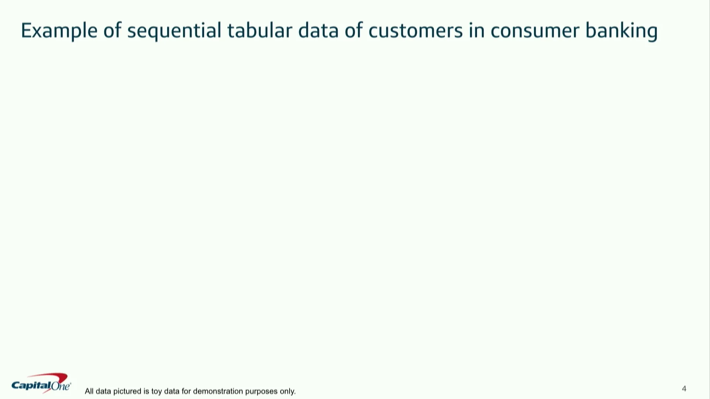
[02:36 – 03:18]
to check whether they have balance and really before the transaction is happening. So that's the causal relationship in the data that we really want to explore. So I'll give you an example of the type of data format that is being used in consumer in finance, especially in banking, and maybe is also relevant in other scenario, where you have the data stream transaction data where we have, you know, across row, you know, columns represent for attributes and across rows, we have
在交易发生之前检查他们是否有余额。这就是我们真正想要探索的数据中的因果关系。因此，我将给您举一个金融消费者使用的数据格式类型的示例，尤其是在银行业，也许在其他场景中也相关，在这些场景中，您拥有数据流交易数据，您知道，跨行，您知道，列代表属性，跨行，我们有
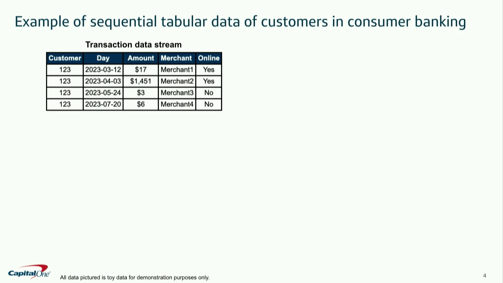
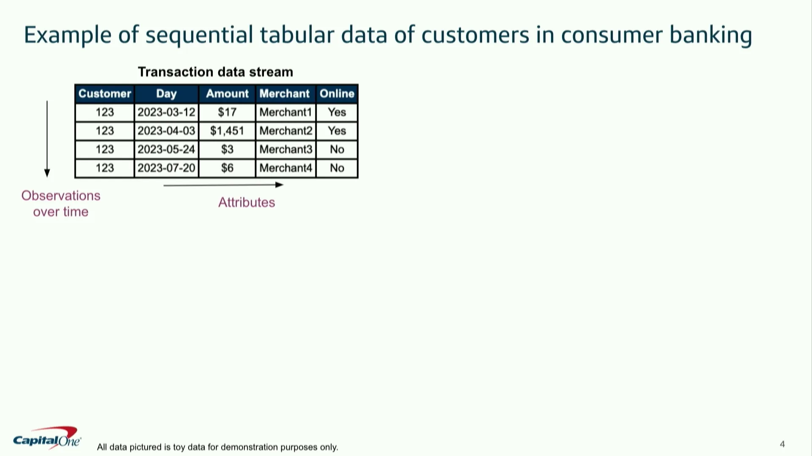
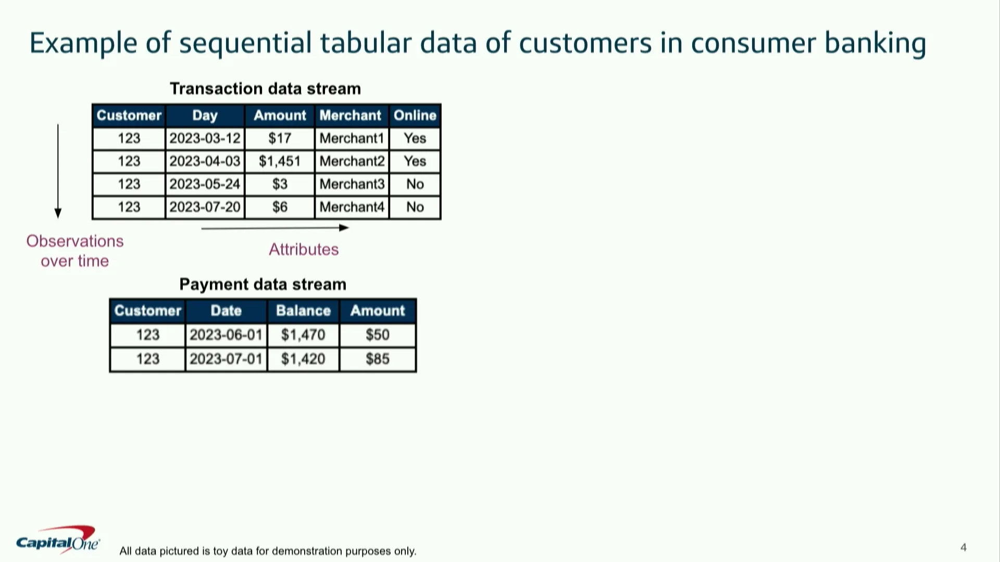
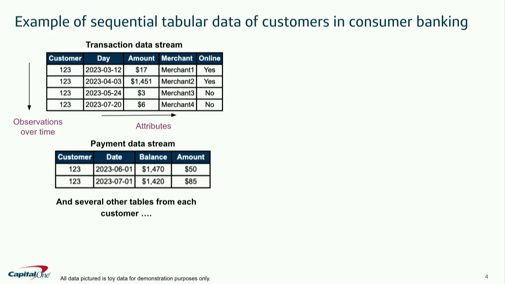
金融消费数据的独特挑战
[03:18 – 03:47]
the observation that happening over time. The same with the payment data streams. We represent rows and across row, that is the temporal order. And we have several other tables like this across the customer. And each customer is having unique set of tables, very important. Each customer information is represented by dozens of unique tables, not more.
随着时间的推移发生的观察。支付数据流也是如此。我们表示行和跨行，这就是时间顺序。我们还有其他几张类似的桌子供客户使用。每个顾客都有一套独特的桌子，这一点非常重要。每个客户信息都由数十个唯一的表（而不是更多）表示。
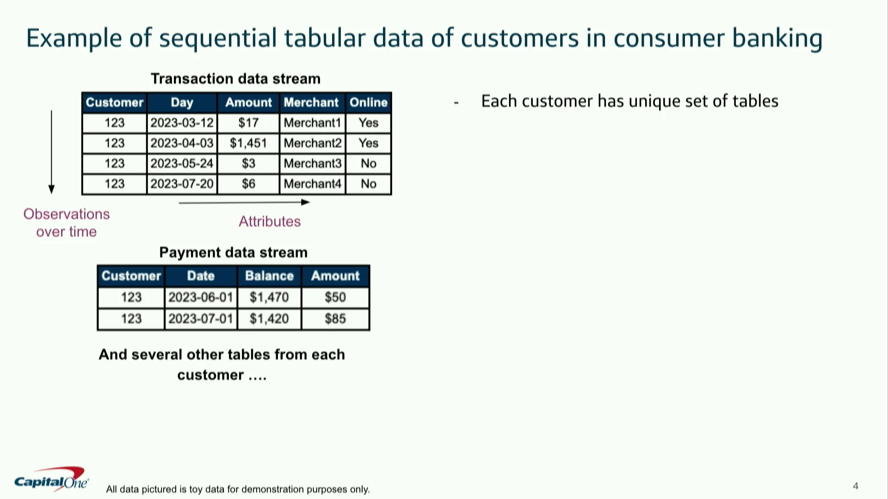
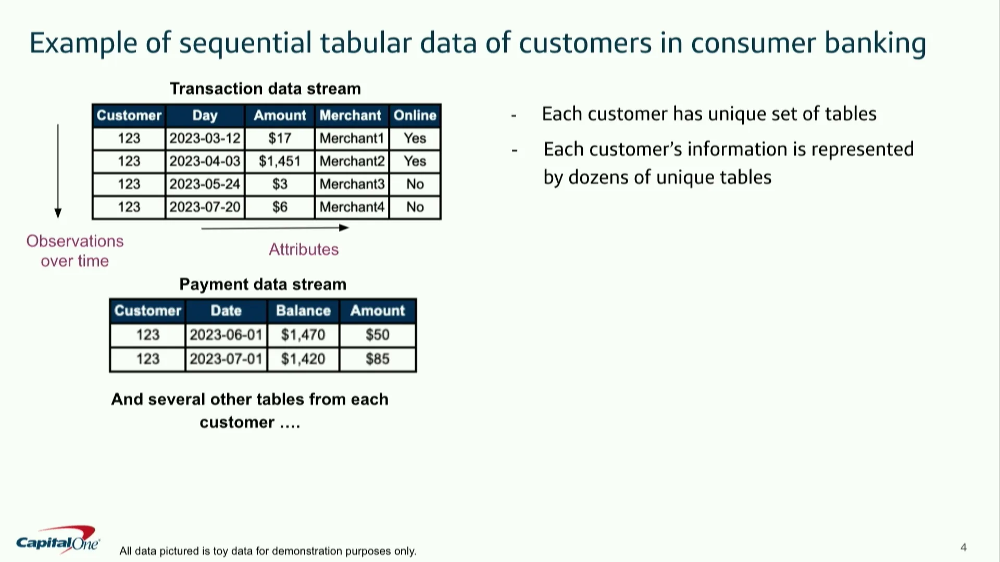
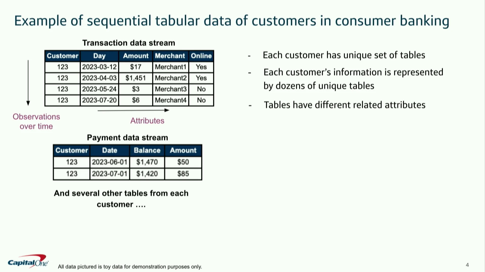
[03:47 – 04:12]
But those table are really correlated to each other. The table have different related attributes, like transaction, you have amounts, merchant, online, for payment, you have the balance. For digital activity, you may see that different type clicks and so on and so forth. Temporal resolution is varying very significantly across tables. So if you can think of the castle, if customer having several transaction
但这些表确实彼此相关。该表有不同的相关属性，例如交易，您有金额，商家，在线，支付，您有余额。对于数字活动，您可能会看到不同类型的点击等等。不同表的时间分辨率差异很大。所以如果你能想到城堡，如果客户有多个交易
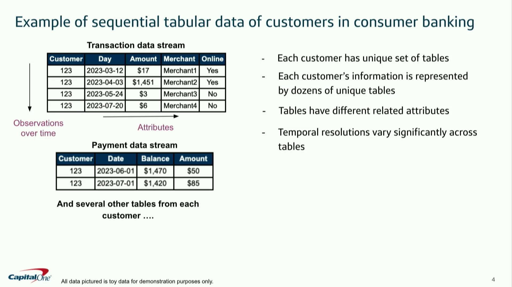
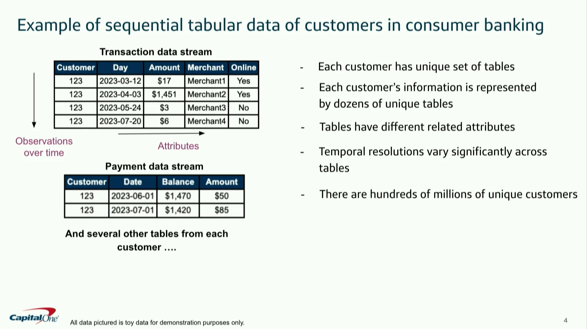
[04:12 – 04:35]
within a month, you may see that the transaction event is much more, much denser than payment, where the customer may only make a few payments during the month. And there are hundreds of millions of unique customers like this. So that data is very, actually very, very huge. Another important point we want to make is that the customer sequence length
一个月之内，你可能会发现交易事件比付款多得多、密集得多，客户可能在一个月内只进行了几次付款。像这样的独特客户有数亿。所以这些数据非常非常非常巨大。我们想要指出的另一个重要点是客户序列长度
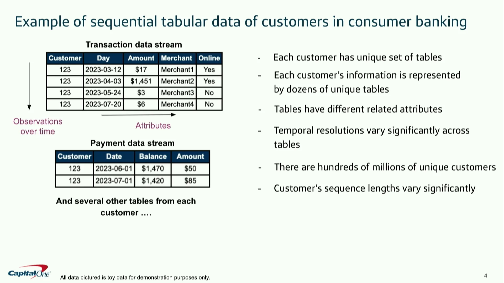
[04:35 – 05:02]
varies significantly. So, you know, for certain customers, you will see several transactions, a lot, a thousand of transactions for other customers where they don't make a lot of transaction that you may see that is much less than a hundred or even smaller number of events. So, yeah, before going to the next slide, I would like to draw your attention
变化很大。所以，你知道，对于某些客户，你会看到几笔交易，很多，对于其他客户来说，他们没有进行大量交易，你可能会看到少于一百甚至更少的事件数量。所以，是的，在进入下一张幻灯片之前，我想提请您注意
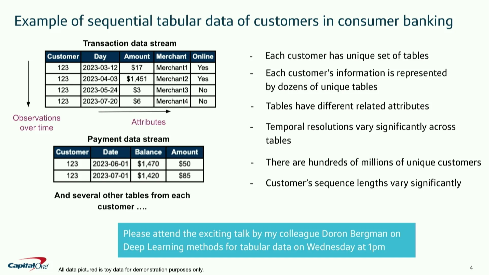
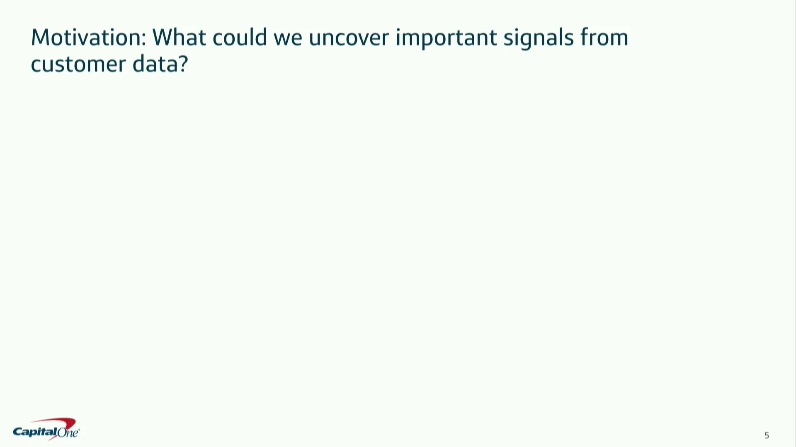
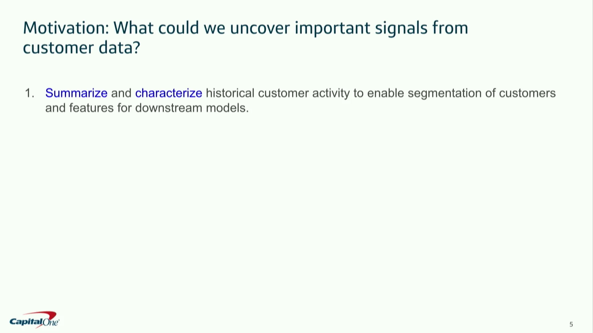
[05:02 – 05:27]
on the talk of my college tomorrow on deep learning method for tabular data on Wednesday at 1 p.m. So the motivation. Of course, we want to understand customer behavior for the task like summarization, characterization, to understand the customers, put customers in different segments and use that customer-less embedding
明天下午 1 点，我的大学将就表格数据的深度学习方法进行演讲。所以动机。当然，我们希望了解客户行为，以完成总结、表征等任务，了解客户，将客户置于不同的细分市场，并使用无客户嵌入
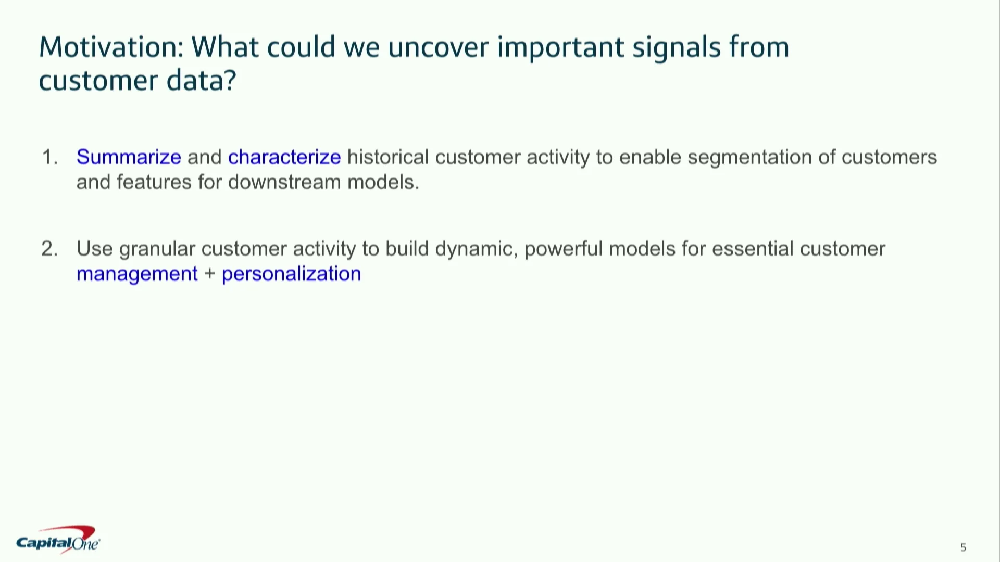
[05:27 – 05:55]
or representation for downstream use cases. And we use that for management and personalization. If we understand customer behavior, we can personalize for the customer to have customer built better financial health. And another one is for reasoning, right? Understanding why customers are behaving this way, interacting in a
或下游用例的表示。我们将其用于管理和个性化。如果我们了解客户的行为，我们就可以为客户提供个性化服务，让客户建立更好的财务健康状况。还有一个是为了推理，对吗？了解客户为何以这种方式进行互动
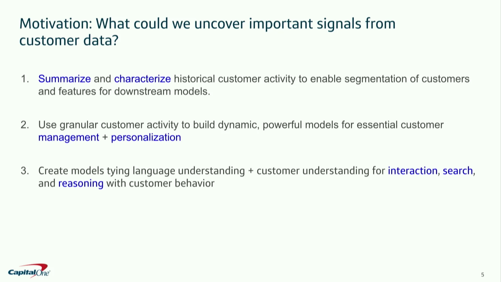
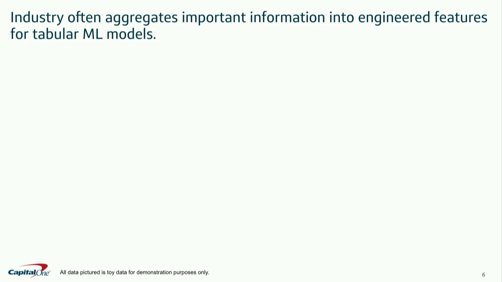
[05:55 – 06:26]
certain way and for search and interaction as well. So there's many use cases that we can learn if we are able to learn effectively from customer representation. Okay, so, you know, interestingly that a lot of in financial industries, like a majority of the models are still type of tree-based type models. Interestingly, one of the reason is that the tree-based model still
某种方式以及搜索和交互。因此，如果我们能够从客户代表中有效地学习，我们就可以学习很多用例。好吧，你知道，有趣的是，金融行业的很多模型，比如大多数模型仍然是基于树的模型。有趣的是，原因之一是基于树的模型仍然
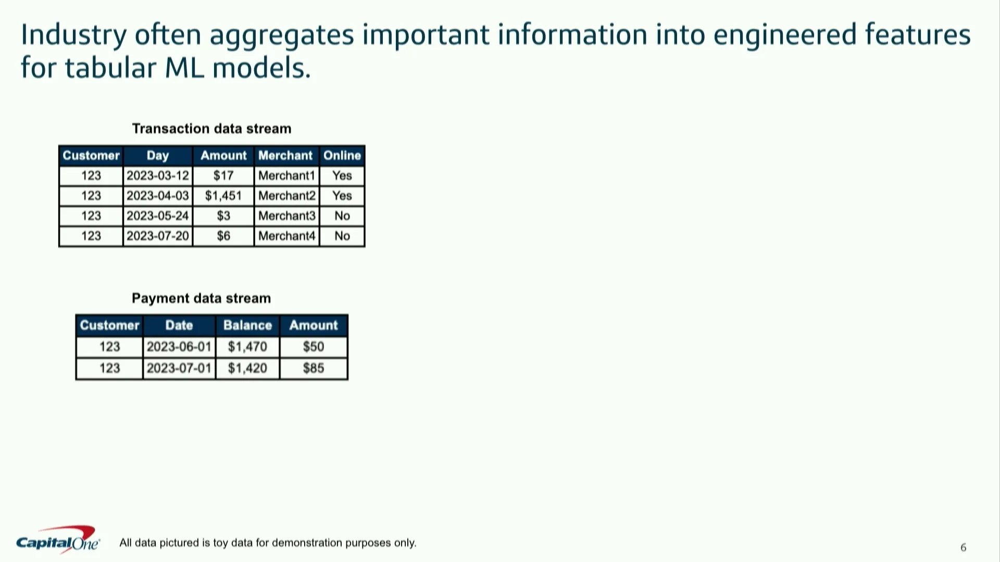
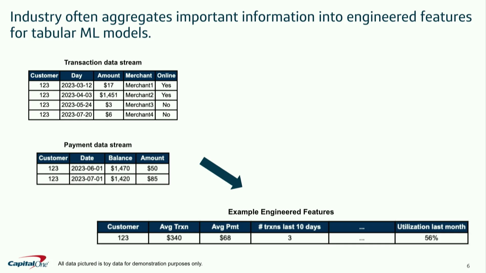
研究目标：时序表格建模
[06:26 – 07:02]
perform very well on tabular data. Second of all, it is because of the interpretability, especially in the highly regulated environment like a banking, being able to interpret what's the wrong and what lead to the change or what lead to the decision making that model admit is very important for our regulator. So in this setting, you have to really have to do a lot of feature
在表格数据上表现非常好。其次，这是因为可解释性，特别是在像银行这样受到高度监管的环境中，能够解释什么是错误的以及导致变化的原因或导致模型承认的决策的原因对于我们的监管者来说非常重要。所以在这种情况下，你必须做很多功能
[07:02 – 07:24]
engineering in order to attract useful feature for tree-based models. And we have to do it per Naoshi use cases. Those learning from one set of feature may not be easily transferable to the other domain. So it's very important and a lot of information is missing, especially temporal information.
工程以便为基于树的模型吸引有用的特征。我们必须根据 Naoshi 用例来做到这一点。那些从一组特征中学习的人可能不容易转移到另一个领域。所以它非常重要，而且缺失了很多信息，尤其是时间信息。
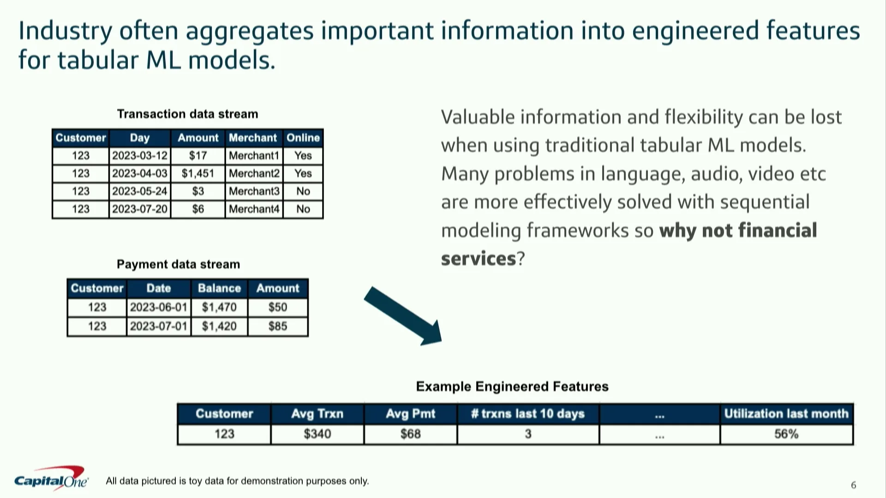
[07:24 – 07:52]
Well, you know, often you want to do certain aggregation on the data, like 30 days average, seven day average, or taking doing standard deviation on seven day or 30 days average. So those information is actually losing a lot of temporal subtlety in the data that you might want to avoid that. Of course, the motivation is that in many domains, sequential language
嗯，您知道，您通常希望对数据进行某些聚合，例如 30 天平均值、7 天平均值，或者对 7 天或 30 天平均值进行标准差。因此，这些信息实际上会丢失数据中的许多时间微妙性，而您可能希望避免这种情况。当然，其动机是在许多领域中，顺序语言
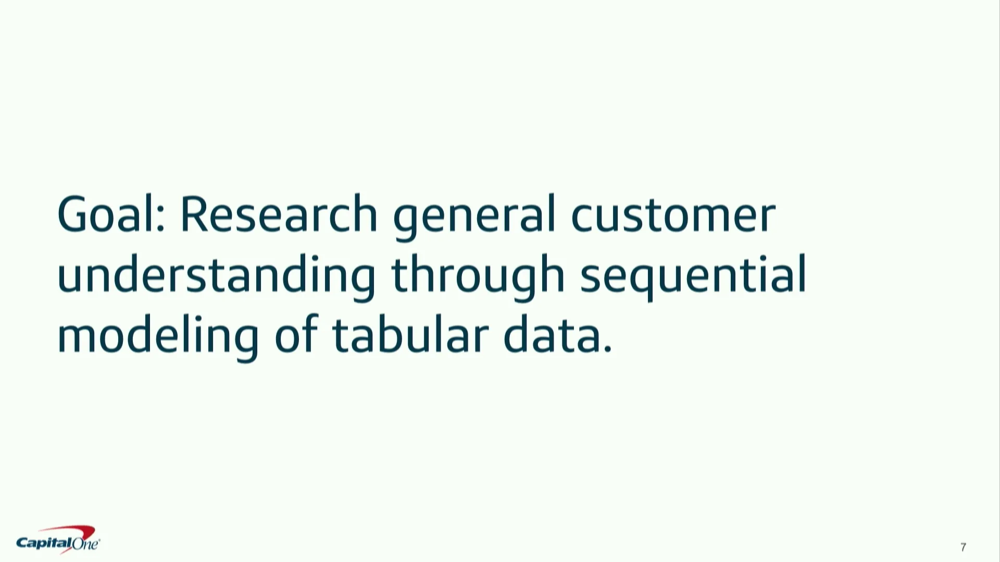
[07:52 – 08:23]
and audio video, handling sequential information is very, very effective. So the question, can we do so in financial services? So the goal here is to perform research on customer understanding through a sequential model of tabular data. Before going into detail, I would like to bring the attention on sequential data.
和音频视频，处理顺序信息是非常非常有效的。那么问题来了，我们在金融服务领域可以这样做吗？因此，这里的目标是通过表格数据的顺序模型对客户理解进行研究。在详细介绍之前，我想先关注顺序数据。
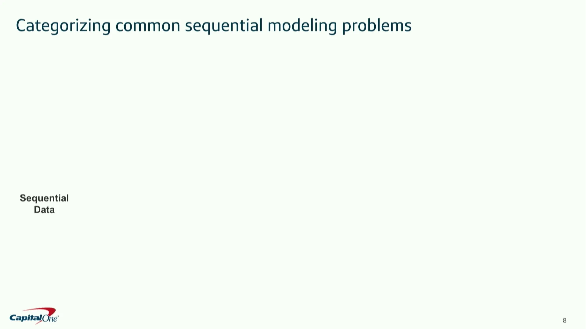
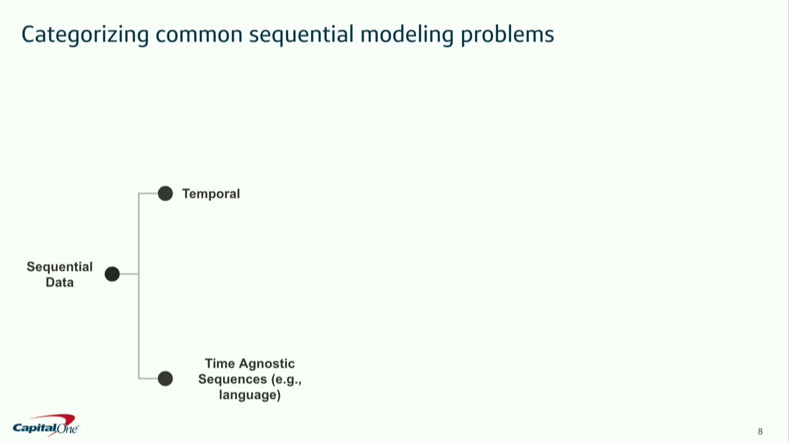
[08:23 – 08:41]
There's two types of sequential data, right? The language model is also sequential, but it's time-agnostic. So it is not independent of time. And on the other hand, the tab, the sequential data we consider is temporal, really have strong temporal correlation in the time space.
有两种类型的顺序数据，对吗？语言模型也是顺序的，但它与时间无关。所以它不独立于时间。而另一方面，选项卡，我们认为的时序数据是时间性的，在时间空间上确实具有很强的时间相关性。
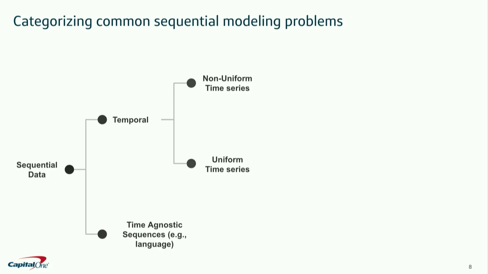
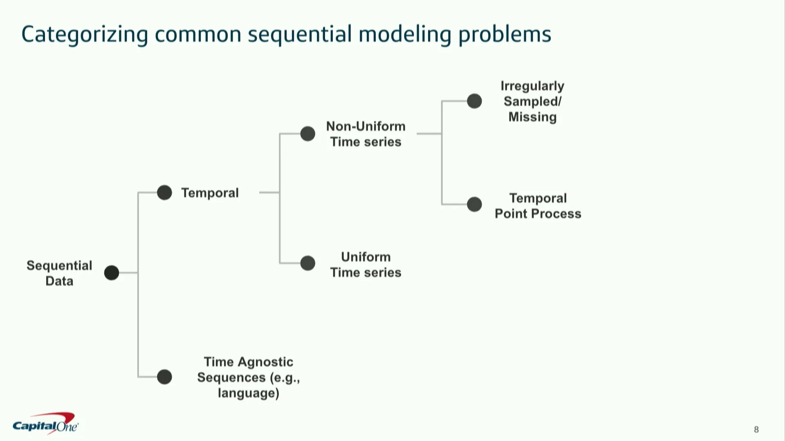
[08:41 – 09:10]
And within the temporal domain, there's the uniformly sample time series and non-uniformly time series. And even within that, we have irregular sample missing data or temporal point process. So most of the research that we're focusing on is on this area. For uniformly irregular sample time series, you can think of it as like
在时域内，有均匀采样时间序列和非均匀采样时间序列。即使在其中，我们也有不规则的样本缺失数据或时间点过程。所以我们关注的大部分研究都集中在这个领域。对于均匀不规则的样本时间序列，您可以将其视为
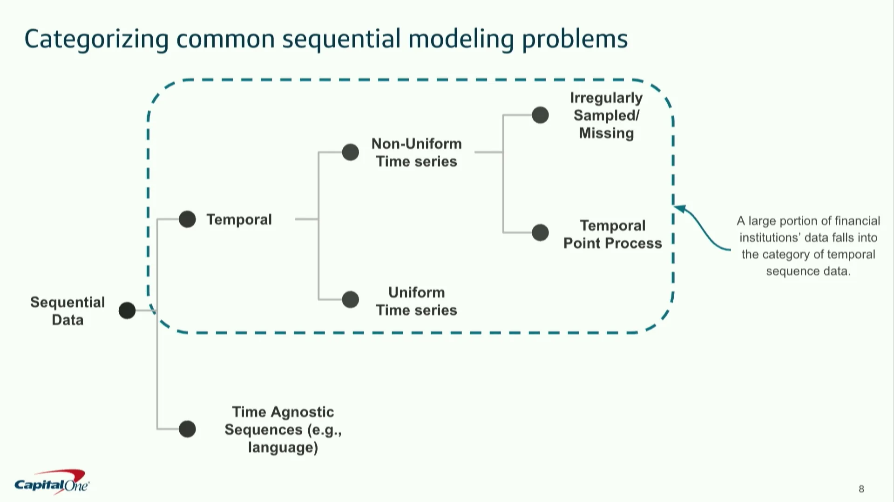
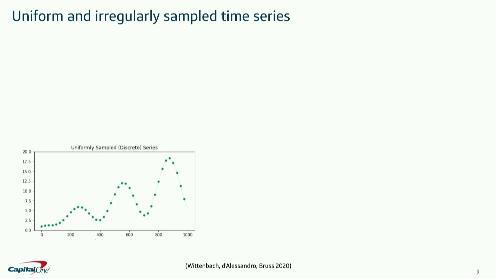
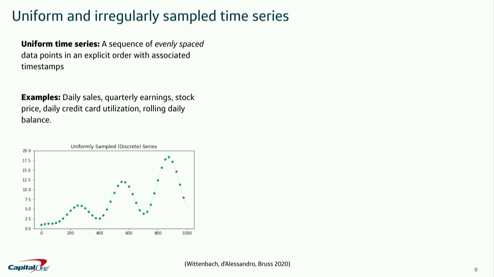
[09:10 – 09:38]
you have a smooth curve. You take a uniform sample observation and use that to study the behavior of the series. So that is the category research in multivariate time series, where the temporal dependencies is very important. But they mostly study on understanding the magnitudes of
你有一个平滑的曲线。您采取统一的样本观察并用它来研究该系列的行为。这就是多元时间序列的范畴研究，其中时间依赖性非常重要。但他们主要研究的是理解
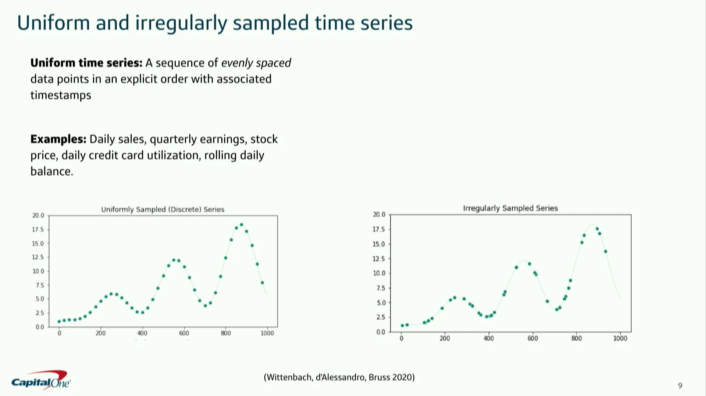
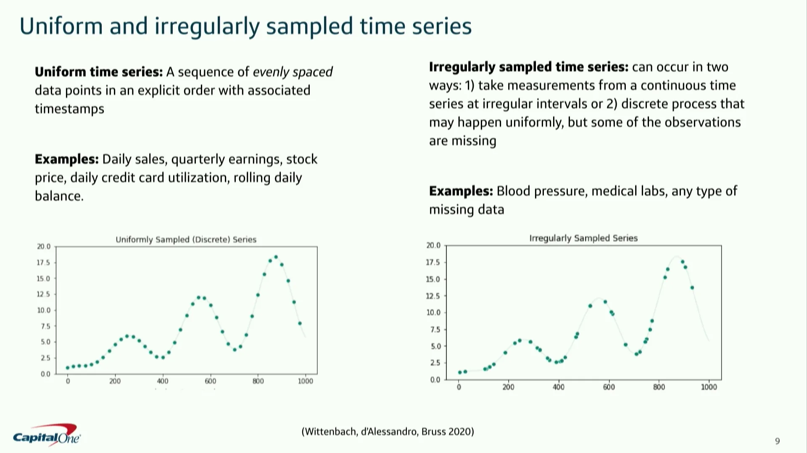
[09:38 – 10:00]
the series by correlation across magnitude within a small local neighborhood of time. Another irregular sample series, again, we have smooth curves. We're taking samples. Sometimes we miss certain observation, so it becomes irregularly sample data.
通过在一个小的局部时间邻域内跨幅度的相关性来序列。另一个不规则的样本系列，同样，我们有平滑的曲线。我们正在取样。有时我们会错过某些观察，因此它变成了不规则的样本数据。
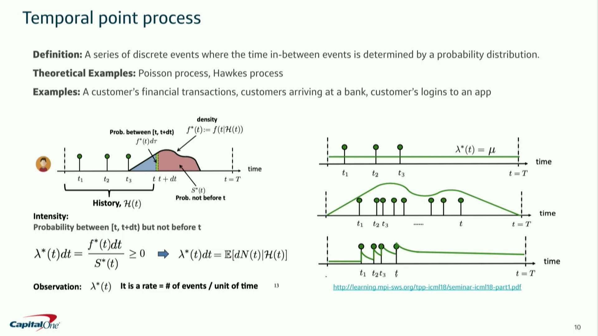
[10:00 – 10:24]
And that is happening in some domains, in medical domains and some other. But what we really think about our data is the more temporal point process, where the customer finance transaction, customer making transaction, customer going to the bank, open the office, is very much like a temporal process that is very
这种情况正在某些领域、医疗领域和其他领域发生。但我们真正考虑的是数据的时间点过程，其中客户融资交易、客户进行交易、客户去银行、打开办公室，非常像一个时间过程，非常像一个时间过程。
[10:24 – 10:45]
non-stationary. And the sample can take any time in the infinite time horizon. That's a lot of studies in temporal point process, focusing mainly on how to predict, how to build a distribution, the temporal distribution between the events, and use that for
非平稳的。并且样本可以取无限时间范围内的任意时间。关于时间点过程有很多研究，主要集中在如何预测，如何构建分布，事件之间的时间分布，并将其用于
[10:45 – 11:06]
prediction tasks. And the focus is more on temporal instead of a spatial. By spatial, I mean across the row. And which is is the areas to lacking the application in tabular data, tabular domain. So what is the difference between banking data and the
预测任务。而且重点更多地放在时间而不是空间上。我所说的空间，是指穿过一排。这就是表格数据、表格领域缺乏应用的领域。那么银行数据和银行数据有什么区别呢？
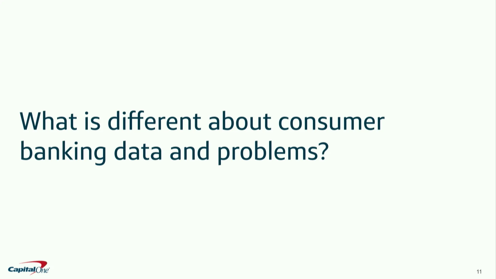
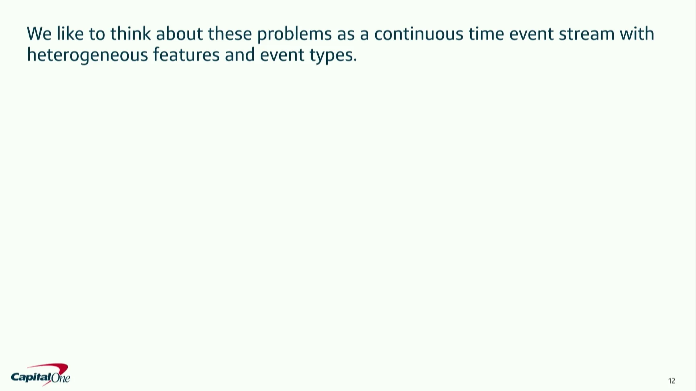
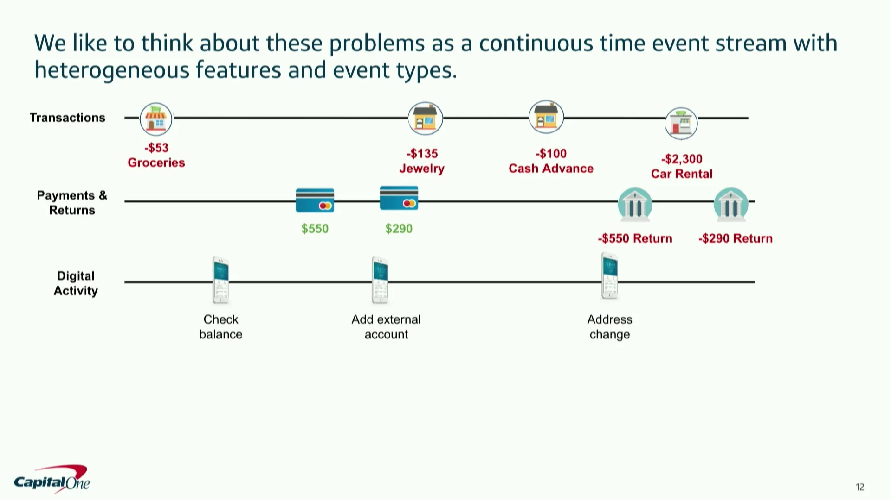
[11:06 – 11:27]
problem that we're considering? So of course, we want to think about data as the continuous time event stream, like why events happening at any time during the infinite time horizon. If you look at the example I mentioned at the beginning of the slides, you have three different data streams,
我们正在考虑的问题？因此，当然，我们希望将数据视为连续时间事件流，就像为什么事件在无限时间范围内的任何时间发生一样。如果您查看我在幻灯片开头提到的示例，您会发现三个不同的数据流，
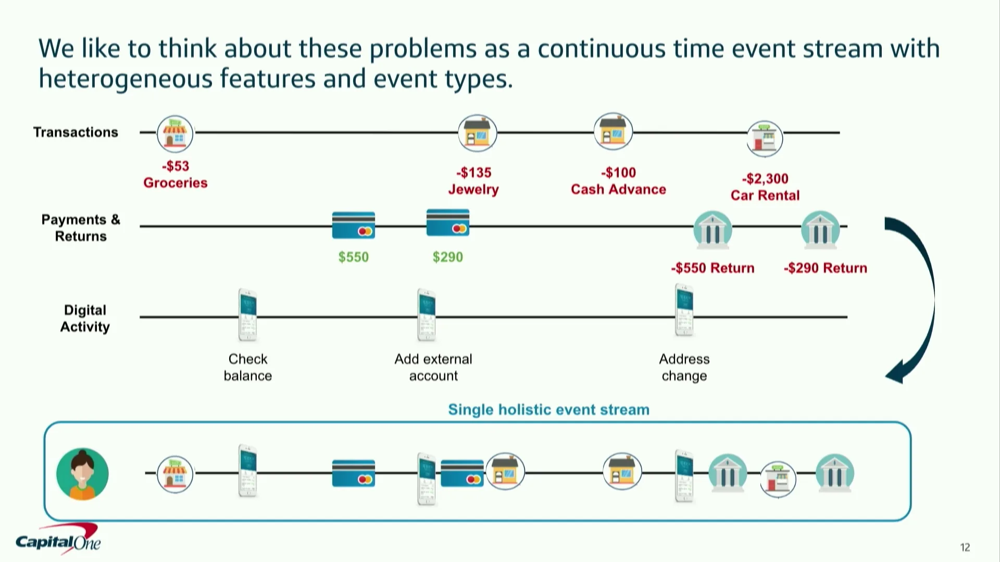
[11:27 – 11:45]
transaction, payment, return, and digital activity. We put them together into a single holistic view. You can think of it as the data is very heterogeneous. It might contain heterogeneous sort of features with different event type. And the correlation across different event type is very
交易、支付、退货和数字活动。我们将它们放在一起形成一个整体视图。您可以将其视为数据非常异构。它可能包含具有不同事件类型的异构类型的功能。不同事件类型之间的相关性非常大
[11:45 – 12:10]
crucial. Sometimes you see a burst of events happening within a short time frame, and no activity is happening, and you may see another sort of burst event happening. And the interleaving between different events can be drastically different for a different time horizon.
至关重要的。有时，您会看到短时间内发生突发事件，但没有任何活动发生，并且您可能会看到另一种突发事件发生。在不同的时间范围内，不同事件之间的交错可能会截然不同。
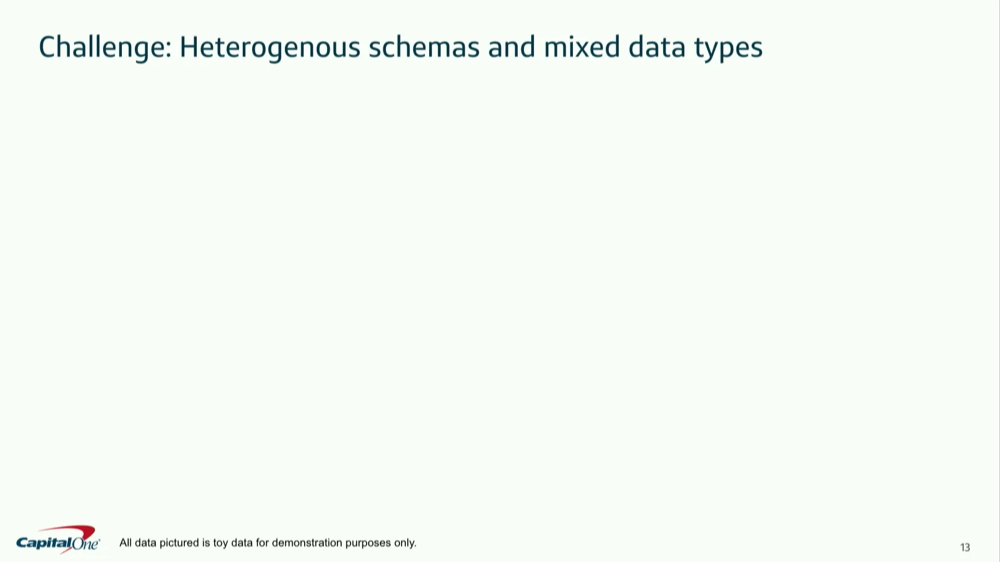
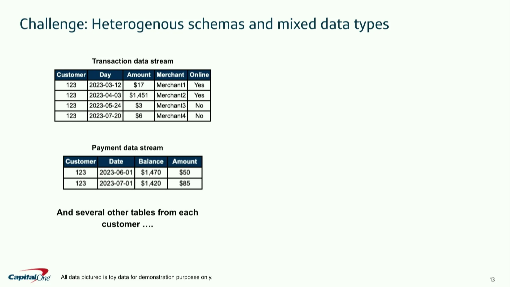
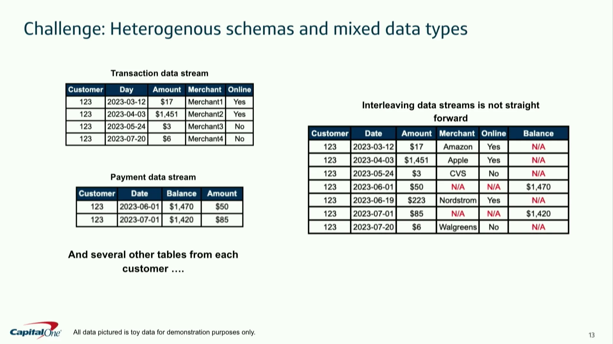
[12:10 – 12:31]
So if you look at it from tabular perspective, and if you think like the single holistic event streams that we mentioned in the previous slides, and put them in the tabular format, in the table format, you see that the data is super, super sparse. It contains another NA value, and it is like a small number
因此，如果你从表格的角度来看它，如果你像我们在前面的幻灯片中提到的单个整体事件流一样思考，并将它们放入表格格式，以表格格式，你会发现数据是超级非常稀疏的。它包含另一个NA值，它就像一个小数
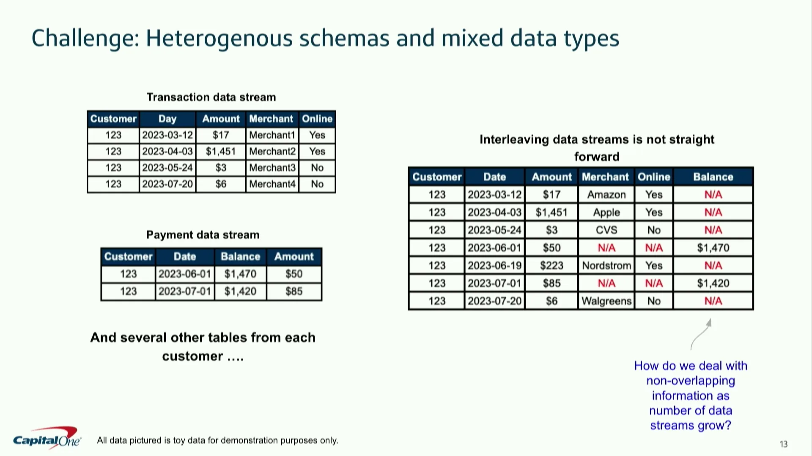
[12:31 – 13:01]
of two tables with a small number of time frames. It can be super sparse if you put all the tables together. So the real question is how to deal with non-overlapping information when the number of data streams grows. Another one is how can we handle both continuous and categorical values effectively?
具有少量时间范围的两个表。如果将所有表放在一起，它可能会非常稀疏。所以真正的问题是当数据流数量增长时如何处理非重叠信息。另一个问题是我们如何有效地处理连续值和分类值？
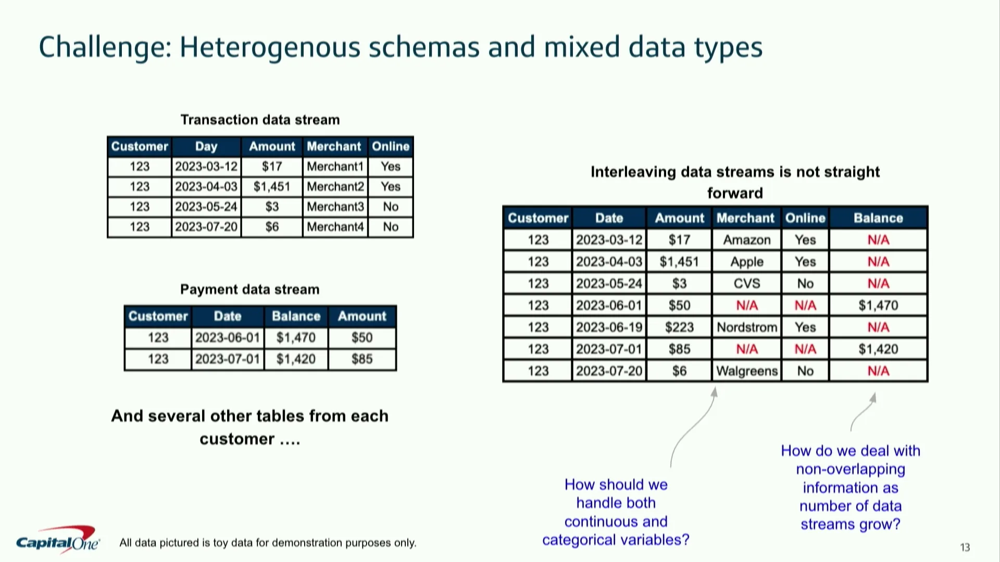
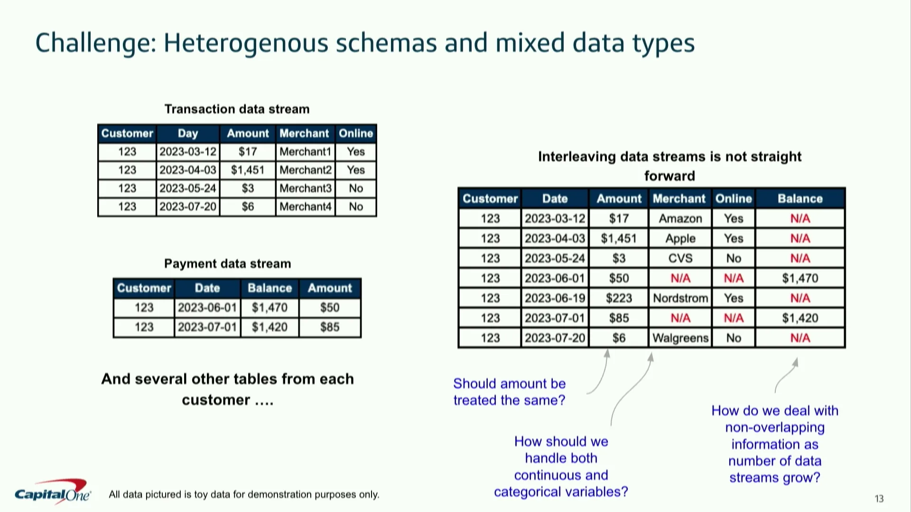
表格序列建模研究综述
[13:01 – 13:17]
How can we, should we treat the amount the same? You have the amount for different transaction, the amount for payments. There's belonging to different event type. Should we treat them the same or not? How can we handle that?
我们怎样才能、应该以同样的方式对待金额呢？您有不同交易的金额、付款金额。有属于不同的事件类型。我们是否应该同等对待他们？我们该如何处理呢？
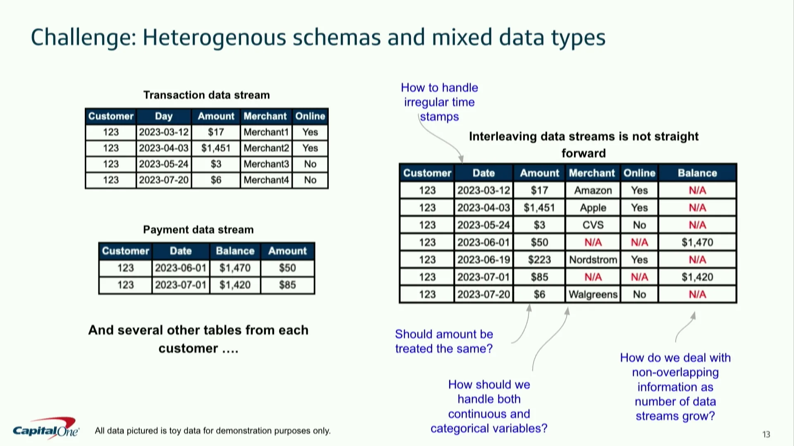
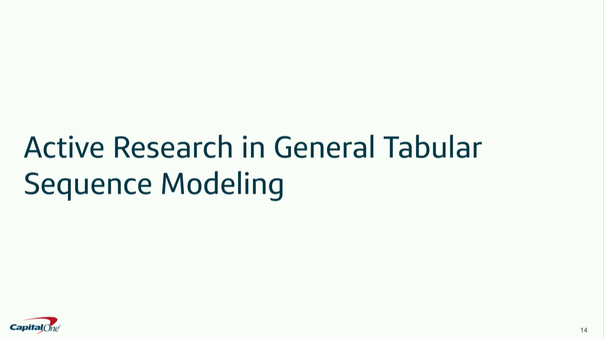
[13:17 – 13:39]
And how to handle irregularity in the time stamps? So those are the fundamental questions that we really want to answer. And the research committee has been addressing some of that. We will go through it in a moment. So we'll start with some of the active research in general
以及如何处理时间戳的不规则性？这些是我们真正想要回答的基本问题。研究委员会一直在解决其中的一些问题。我们稍后会详细介绍它。因此，我们将从一些一般性的活跃研究开始
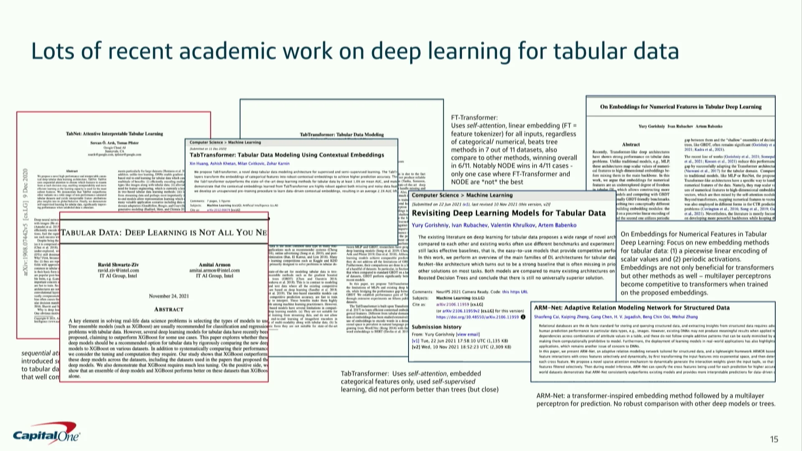
[13:39 – 14:00]
tabular sequence. There's a lot of academic research, a lot of innovative work in this space of tabular data. And probably start in 2020. There's a lot of innovation going into contributing to how to encode roles, how to train, between the model, how
表格序列。在表格数据领域有很多学术研究和创新工作。可能从 2020 年开始。有很多创新致力于如何编码角色、如何训练、模型之间如何
[14:00 – 14:17]
to build a training objective. There's papers on proving that deep learning is not suitable for tabular data. And there are papers on how to understand those scenarios, the situation. And those work, and I would point out there's several
建立培训目标。有论文证明深度学习不适合表格数据。还有一些关于如何理解这些场景和情况的论文。这些都有效，我想指出有几个
[14:17 – 14:44]
recent work on building, trying to build a variation model for tabular data across tons of tables. So the model data can go into billions of rows, and the model size can be in order billions. So it's very significant dedication into how to learn information across tables.
最近的构建工作，试图为大量表中的表格数据构建变化模型。因此模型数据可以达到数十亿行，模型大小可以达到数十亿。因此，我们非常致力于如何跨表学习信息。
[14:44 – 15:05]
But however, most of the work is really focused on non-sequential tabular data. So there's no temporal correlation in the time across rows. It seems to be missing in the area. So if I bring back to the timeline, the research on
但是，大多数工作实际上都集中在非顺序表格数据上。因此，行之间的时间不存在时间相关性。该地区似乎失踪了。所以如果我回到时间线，关于的研究
[15:05 – 15:28]
sequential tabular transformers. It started in 2020, where there's several groundbreaking work on tabular deep learning. For example, FT transformers, tabless, Tabi, and several other. The learning is really focused on representation within a
顺序表格变压器。它始于 2020 年，在表格深度学习方面出现了几项开创性的工作。例如，FT 变压器、tabless、Tabi 等等。学习的真正重点是在一个
[15:28 – 15:51]
single table. So it's very small scale research. In 2021, there's a paper on really a first paper on study the sequential temporal, sequential tabular modeling of tablets, where we'll discuss it in a couple of moments.
单表。所以这是一个非常小规模的研究。 2021 年，将有一篇关于研究平板电脑的顺序时间、顺序表格建模的论文，我们将在几分钟内讨论它。
[15:51 – 16:19]
Another set of papers on 2020, also trying to encode, really consider the time and encode time into the model, so that the model is being able to capture the temporal aspect of the data. Another paper also around the same year, focusing on represent training the model across different
2020 年的另一组论文，也尝试编码，真正考虑时间并将时间编码到模型中，以便模型能够捕获数据的时间方面。另一篇论文也在同一年发表，重点关注跨不同领域的模型训练
[16:19 – 16:44]
heterogeneous data streams. So the first previous work is focused on a single table. This work is trying to extend it to learn across multiple tables in sequential. And in 2024, this year, there's the burst of many papers on our top conferences, trying to view tabular
异构数据流。因此，之前的第一个工作主要集中在单个表上。这项工作试图将其扩展为按顺序跨多个表进行学习。而到了2024年，今年，我们的顶级会议上爆发出很多论文，试图以表格形式查看
[16:44 – 17:18]
variation model for tabular data. Notably, UNITAB, CM2, TB BIRDS, a lot of focus on building huge models across all the available tabular data on the internet. So when you talk about tabular data, one of the most probably fundamental question is, how can we encode rows?
表格数据的变异模型。值得注意的是，UNITAB、CM2、TB BIRDS 非常注重在互联网上所有可用的表格数据上构建巨大的模型。因此，当您谈论表格数据时，最可能的基本问题之一是，我们如何对行进行编码？
[17:18 – 17:37]
And if you look at these rows, you have multiple informations. You have a customer ID, you have the date time, you have the amount, which is continuous. You have the merchant, which is categorical, and you have online or blind, it's a binary number.
如果您查看这些行，您会获得多种信息。您有客户 ID、日期时间、金额，这些都是连续的。你有商人，它是分类的，你有在线或盲目的，它是一个二进制数。
[17:37 – 18:02]
So it is a diverse heterogeneous data. And how can we encode it effectively in the models? So one of the simple approach is that should we quantize the data? If we quantize a continuous value, then we turn everything into a discrete.
所以它是一个多样化的异构数据。我们如何在模型中有效地对其进行编码？因此，简单的方法之一是我们应该量化数据吗？如果我们量化一个连续值，那么我们就会把一切都变成离散值。
[18:02 – 18:23]
And we can use the discrete representation, bring it into the embedding lookup table, and map it to the row encoder. You can think of a row encoder as the Transformer, or FT-Transformer, or MLP, for example. And you get the row embedding. On the other hand, if you don't really want to quantize
我们可以使用离散表示，将其带入嵌入查找表，并将其映射到行编码器。例如，您可以将行编码器视为 chart formers、FT-chart formers 或 MLP。你就得到了行嵌入。另一方面，如果你真的不想量化
[18:23 – 18:46]
the data due to the loss of information, then you can do transformation. You can transform, scale the numerical values, doing a lock, piecewise meaning, or a scaling, and then pass it to the MLP layer, or Fourier layer, to gather representation, to look at the embeddings, and map it to the
数据由于信息丢失，那么就可以做变换。您可以变换、缩放数值、执行锁定、分段意义或缩放，然后将其传递到 MLP 层或傅立叶层，以收集表示、查看嵌入，并将其映射到
[18:46 – 19:08]
same embedding as the categorical embedding. And now, you can use a row encoder and encode the entire information. Each technique here requires you to handle different training objectives. For example, if you do quantization, you can use
与分类嵌入相同的嵌入。现在，您可以使用行编码器并对整个信息进行编码。这里的每种技术都需要您处理不同的训练目标。例如，如果您进行量化，则可以使用
[19:08 – 19:31]
cross-entropy loss. However, when you want to handle, use both continuous and categorical values, then you have to view a training objective differently. Maybe combination of cross-entropy loss, plus MLP, plus the MSC, or some other more innovative approach.
交叉熵损失。但是，当您想要同时使用连续值和分类值时，您必须以不同的方式看待训练目标。也许是交叉熵损失、MLP、MSC 或其他一些更具创新性的方法的组合。
[19:31 – 20:03]
So in the next few slides, I will walk you through some of recent work on how to encode the tabular rows. So I'll start with this paper's challenge stuff. So the question or the motivation behind the paper is that when you look at the numerical values, for example, blood pressure and temperature, they share a very
因此，在接下来的几张幻灯片中，我将引导您完成一些有关如何对表格行进行编码的最新工作。所以我将从本文的挑战内容开始。因此，本文背后的问题或动机是，当你查看数值时，例如血压和体温，它们有一个非常相似的特征。
[20:03 – 20:28]
similar value. And without looking at the column name, how can we distinguish those two numbers? If we don't care about the column name, encoding those, if they really want to distinguish the two values that are similar, but belong to different columns.
相似的值。如果不看列名，我们如何区分这两个数字？如果我们不关心列名，则对它们进行编码，如果它们确实想区分相似但属于不同列的两个值。
[20:28 – 20:58]
So the way they handle it, by bringing the column name and its values together in the encodings. For example, if you have three type data, you have three streams, with categorical is very simple. You use categorical column plus concatenate the column name, and the categorical value, and doing very much
他们处理它的方式是，将列名及其值放在编码中。例如，如果您有三种类型的数据，则您有三个流，分类非常简单。您使用分类列加上连接列名称和分类值，并且做了很多事情
[20:58 – 21:22]
like an LM tokenization, a simple word tokenization to bring it to embedding space. For numerical values, now you use the column, you encode the column names, map it to the embedding space, and with the numerical value, is this doing multiplication. So multiply the value, the magnitude, with the embeddings
就像 LM 标记化一样，一个简单的单词标记化，将其带入嵌入空间。对于数值，现在使用列，对列名称进行编码，将其映射到嵌入空间，并与数值一起进行乘法。因此，将值（幅度）与嵌入相乘
[21:22 – 21:46]
coming from the column names. And same with the binary. But in this case, the binary can be 0 and 1. So you can handle it in effective ways to not encoding the 0 matrix, embedding matrix. And then once you have everything together, you can
来自列名称。与二进制相同。但在这种情况下，二进制可以是0和1。因此您可以通过有效的方式处理它，而不是对0矩阵、嵌入矩阵进行编码。一旦你把一切都准备好了，你就可以
[21:46 – 22:11]
just concatenate them and pass it to the transformers to get the encoding. So the paper proposed to use the contrastive learning to train the models because of the way they handle numerical value and categorical value in the raw format. So they used contrastive learning
只需连接它们并将其传递给变压器即可获得编码。因此，由于模型处理原始格式的数值和分类值的方式，本文建议使用对比学习来训练模型。所以他们使用对比学习
[22:11 – 22:43]
to train the models. Another paper come out this year is that they want the average feature and error. So to do so, they turn the column names and its value into a proper language, a proper sentence, and pass that sentence to feature and tokenization, tokenizer, and
训练模型。今年发表的另一篇论文是他们想要平均特征和误差。为此，他们将列名称及其值转换为适当的语言、适当的句子，并将该句子传递给特征和标记化、标记化器和
[22:43 – 23:03]
pass it to the feature and error. And then on top of that, you do a pooling layer to get embedding for that column. Same with the amount, the numerical values. So the month income is $3,000, for example. They already do pooling the column name.
将其传递给功能和错误。 And then on top of that, you do a pooling layer to get embedding for that column.与金额、数值相同。例如，每月收入为 3,000 美元。他们已经对列名称进行了池化。
[23:03 – 23:30]
And on top of that, they apply multiplication where you normalize the input, the numerical values. So now you have two set of feature representing two columns. And then you can do so across other columns. They proposed a very interesting approach to train
最重要的是，它们应用乘法来标准化输入（即数值）。现在你有两组代表两列的特征。然后您可以在其他列中执行此操作。他们提出了一种非常有趣的训练方法
[23:30 – 23:50]
the models, a very innovative way of masking, and then the use of cosine similarity loss on the categorical value and MSE loss on the numerical values. So very innovative. I would encourage you to take a look at that if you are interested in.
模型，一种非常创新的掩蔽方式，然后在分类值上使用余弦相似性损失，在数值上使用 MSE 损失。非常创新。如果您有兴趣，我鼓励您看一下。
[23:50 – 24:22]
Another work came out at SCOR this year, same philosophy. In quoting the column names and column values separately or jointly. But in this paper, what they consider is that they discretize the numerical values into different bins and use the bin as the subword and turn it into a vocab.
今年 SCOR 还推出了另一部作品，理念相同。单独或联合引用列名和列值。但在本文中，他们考虑的是，将数值离散化到不同的 bin 中，并使用 bin 作为子词，将其转化为词汇。
[24:22 – 24:56]
And now you have different vocabulary for different bins. And you can have a lookup table for each bin. And they also multiply the actual magnitude of the values with associate bin or associate embeddings. So they capture both separation between different bins. Also, they are being able to capture the raw magnitude
现在，不同的垃圾箱有不同的词汇。您可以为每个垃圾箱建立一个查找表。它们还将值的实际大小与关联 bin 或关联嵌入相乘。因此他们捕获了不同垃圾箱之间的分离。此外，他们能够捕获原始震级
[24:56 – 25:37]
information of the data. And then after that, the two columns can be combined together via a very shallow attention layer to learn the information jointly across columns. I want to bring your attention on another paper. It's really the focus of the paper is on a generative task
数据的信息。然后，这两列可以通过一个非常浅的注意力层组合在一起，以跨列共同学习信息。我想让你注意另一篇论文。这篇论文的重点确实是生成性任务
[25:37 – 26:04]
where you want to generate a synthetic tabular data. However, the idea can be used for other tasks as well. In this case, they leverage P2NOM. They turn the rows into a proper language sentence. And then doing some sort of permutation on the rows. So one of the very important property in tabular data
您想要生成合成表格数据的位置。然而，这个想法也可以用于其他任务。在这种情况下，他们利用 P2NOM。他们将这些行变成正确的语言句子。然后对行进行某种排列。所以表格数据中非常重要的属性之一
[26:04 – 26:29]
is that it is the column invariance. So you swap between the two columns, the information should be preserved. So the way they do it here, they do permutation, is to make sure that you learn a rotational invariance data. And now we have the proper sentence.
就是它的列不变性。因此，您在两列之间交换，信息应该被保留。所以他们在这里做的方式，他们做排列，是为了确保你学习旋转不变性数据。现在我们有了正确的句子。
[26:29 – 26:48]
And you can pass this to the feature model to get the embeddings. However, I mentioned that most of the work is focusing on row representation instead of sequential representation. Of course, I will explain in little detail
您可以将其传递给特征模型以获取嵌入。然而，我提到大部分工作都集中在行表示而不是顺序表示上。当然，我会详细解释一下
[26:48 – 27:08]
about those three works. Of course, once you have the row transformers by embedding, you can bring them together to learn the contextual representation over time with another layer of sequence transformers. And then from there, you can build a pre-trained model
关于这三部作品。当然，一旦您通过嵌入获得了行变换器，您就可以将它们组合在一起，以便通过另一层序列变换器随着时间的推移学习上下文表示。然后从那里，您可以构建一个预训练模型
[27:08 – 27:27]
to train the models, either with mass-language model or causal-language model, and use that for different downstream tasks. So let me start with tablets. One of the first papers that follow this direction is basically is the hierarchical models
使用大众语言模型或因果语言模型来训练模型，并将其用于不同的下游任务。那么让我从平板电脑开始吧。遵循这个方向的第一篇论文基本上是层次模型
[27:27 – 27:51]
where they encode rows. And on top of rows, they encode information across different rows. And the idea is first, as I mentioned, they quantized the feature, quantized the continuous data in two beings together with categorical values.
它们对行进行编码。在行的顶部，它们对不同行的信息进行编码。首先，正如我提到的，他们量化了特征，量化了两个存在体中的连续数据以及分类值。
[27:51 – 28:15]
Pass it to what they call a few transformers with pooling to get the row embeddings. And on top of that, what they propose to use the tabular BERT models to get a representation. So the embeddings is actually not only learn, capture the information across rows,
将其传递给他们所谓的一些具有池化功能的变压器以获得行嵌入。最重要的是，他们建议使用表格 BERT 模型来获得表示。所以嵌入实际上不仅仅是学习、捕获跨行的信息，
[28:15 – 28:34]
but also capture information within the rows. So that's what they call hierarchical models. However, what's missing here is that they didn't really encode the data. which is very important. So we missed that.
还可以捕获行内的信息。这就是他们所说的分层模型。然而，这里缺少的是他们并没有真正对数据进行编码。这非常重要。所以我们错过了。
[28:34 – 28:59]
That is the idea behind Phaletron. So they proposed two things. First is that, of course, when we look at the data, data may contain both static and dynamics. So in the banking space, the static feature can be occupation, can be age, and then
这就是 Phaletron 背后的想法。所以他们提出了两件事。首先，当然，当我们查看数据时，数据可能包含静态和动态。所以在银行领域，静态特征可以是职业，可以是年龄，然后
[28:59 – 29:21]
some other information. So those static information is not sequential. And they propose to treat them differently by having a separate static transformers at the beginning of the sequence to capture the embedding, the static embeddings.
一些其他信息。所以这些静态信息不是连续的。他们建议以不同的方式对待它们，在序列的开头有一个单独的静态变压器来捕获嵌入，即静态嵌入。
[29:21 – 29:43]
And on the side, they have different few transformers to learn information across rows. So as I said, distinguish static and dynamics features. So now, given the row embeddings, what they're going to do next is they add a layer of few transformers, few type embeddings.
另一方面，他们有不同的几个转换器来跨行学习信息。正如我所说，区分静态和动态特征。所以现在，考虑到行嵌入，他们下一步要做的是添加一层少量的变压器和少量的类型嵌入。
[29:43 – 29:58]
So to distinguish whether it is static transformers or future transformers. So they add a layer to distinguish whether that is static information or dynamic information. And on top of that, they have time embeddings.
所以要区分是静态变压器还是未来变压器。所以他们添加了一个层来区分这是静态信息还是动态信息。最重要的是，它们还有时间嵌入。
[29:58 – 30:21]
So they embed the data that is being available in the data. And then they bring them together via summation. Now, on top of that, they have the same, like I go forward, where they have another layer of transformers to learn the sequential embeddings.
因此，他们将可用的数据嵌入到数据中。然后他们通过求和将它们汇总在一起。现在，最重要的是，他们有相同的，就像我前进的那样，他们有另一层变压器来学习顺序嵌入。
[30:21 – 30:46]
So another work here in this space so far, what we are seeing is that most of the work is only focusing on a single table. You have a single table representing the information. This paper really want to extend that to consider to learn across different tables.
到目前为止，这个领域的另一项工作，我们看到的是，大部分工作只关注单个表。您有一个代表信息的表。本文确实想扩展它以考虑跨不同表进行学习。
[30:46 – 31:08]
So the idea here is that you have two different type events, all data streams A and B. And you have separate transformers for each event type. So we have transformers for transaction. You have a few transformers for payment, for example. And then they map it to two different linear
所以这里的想法是，你有两个不同类型的事件，所有数据流 A 和 B。并且每个事件类型都有单独的转换器。所以我们有交易变压器。例如，您有一些用于付款的变压器。然后他们将其映射到两个不同的线性
[31:08 – 31:31]
to bring them in the same embedding space. So after event type projection, in this case, you have two different linear mapping where you take different input size and map it to the same embedding space, row embeddings. And on top of that, they have event transformers
将它们置于同一嵌入空间中。因此，在事件类型投影之后，在这种情况下，您有两个不同的线性映射，您采用不同的输入大小并将其映射到相同的嵌入空间，即行嵌入。最重要的是，他们有事件转换器
[31:31 – 32:00]
and then another linear mapping to map back to the different event space for mass modeling. So a couple of innovations I would like to mention here that they don't do quantitation in the raw space. Instead, they use the periodic representation or periodic encoding that in court, in this case V,
然后另一个线性映射映射回不同的事件空间以进行质量建模。因此，我想在这里提到一些创新，它们不在原始空间中进行定量。相反，他们使用法庭上的周期表示或周期编码，在本例中为 V，
[32:00 – 32:28]
for example, they use bring it into Fourier domains, into eight dimension periodic embeddings. And then from there, they bring it to the transform embedding space via linear mapping. So just because the input data is continuous, what they do when they do masking,
例如，他们使用将其带入傅立叶域、八维周期性嵌入。然后从那里，他们通过线性映射将其带到变换嵌入空间。所以仅仅因为输入数据是连续的，他们在进行屏蔽时会做什么，
[32:28 – 32:51]
that if they mask the continuous value, they don't do MSC to train the numerical values, to reconstruct the numerical values, instead of they bin the numerical values and bring that into 10 different bins. So when you mask the numerical value,
如果他们屏蔽连续值，他们不会使用 MSC 来训练数值、重建数值，而是将数值分箱并将其放入 10 个不同的分箱中。所以当你屏蔽数值时，
[32:51 – 33:17]
when doing the training, you ask the model to where that numerical value belong to what bins. So basically, even though the input data is continuous, you still be able to use cross entropy to train the model. OK. So I would like to go through some of the work
在进行训练时，您要求模型该数值属于哪个容器。所以基本上，即使输入数据是连续的，您仍然可以使用交叉熵来训练模型。好的。所以我想完成一些工作
[33:17 – 33:41]
that we have done in this space. I just want to be my full time. OK. We have 20 minutes. So in this space, we have tried to make several initial efforts to leverage what has been done in the community
我们在这个领域所做的。我只想全职工作。好的。我们有 20 分钟时间。因此，在这个领域，我们尝试做出一些初步努力，以利用社区中已经完成的工作
[33:41 – 34:03]
and think about what can we adapt and innovate on top of that. So one of the thinking that, of course, we can build a very complex model, like hierarchical models, can we make it even simpler, more complex city, more things can go wrong.
并思考我们可以在此基础上进行哪些调整和创新。所以其中一个想法是，当然，我们可以建立一个非常复杂的模型，比如分层模型，我们可以让它变得更简单，更复杂的城市，更多的事情可能会出错。
[34:03 – 34:34]
And also, we want to make sure that we can build a simple model first and leverage on top of that. And also, in this especially regulated industry, simple models seem to be more preferable. Of course, transform is not simple at all, but at least we will start from there.
而且，我们希望确保我们可以首先构建一个简单的模型并在此基础上进行利用。而且，在这个受到特别监管的行业中，简单的模型似乎更受欢迎。当然，变换一点也不简单，但至少我们会从那里开始。
[34:34 – 35:01]
So go back to the tabular data that we consider. What we start with is that thinking about the idea of quantization. So we quantize the data, and now we want to build a vocabulary on the joint feature categories. And what we do with that per rows,
那么回到我们考虑的表格数据。我们首先思考量化的概念。所以我们量化数据，现在我们想要建立一个关于联合特征类别的词汇表。我们对每行做了什么，
我们的初步探索
[35:01 – 35:26]
we turn the rows into this format. So for example, we have transaction. We start with the event type, and then with the amount, a merchant, and online. So we map those column name with its value and separate them by special characters.
我们将行转换为这种格式。例如，我们有交易。我们从事件类型开始，然后是金额、商家和在线。因此，我们将这些列名称与其值进行映射，并用特殊字符分隔它们。
[35:26 – 35:48]
So basically, what we do is that we turn rows into some sort of vocabulary. And now we have transaction. We have another payment, where we have balance, the amount, and so on and so forth. So by doing that, we can turn the tables
所以基本上，我们所做的就是将行转换成某种词汇表。现在我们有交易了。我们还有另一笔付款，其中有余额、金额等等。所以通过这样做，我们可以扭转局面
[35:48 – 36:13]
into some sort of vocabularies. Of course, we have to be careful with the vocab size, and it's controlled by either doing some sort of careful quantization to make sure that the vocab is not blowing up. And now, given the vocab, we can turn that into token orders.
变成某种词汇。当然，我们必须小心词汇表的大小，它是通过进行某种仔细的量化来控制的，以确保词汇表不会爆炸。现在，给定词汇，我们可以将其转化为令牌命令。
[36:13 – 36:41]
And given the way we encode the information, now we have a single event token, where each event here is encoded by a single row of the tabular data. And we can either pass it to the Transformer, the entire events, encoded events, tokens into the Transformer.
考虑到我们对信息进行编码的方式，现在我们有一个事件标记，其中每个事件都由单行表格数据进行编码。我们可以将它传递给 chart formers，将整个事件、编码事件、令牌传递给 chart formers。
[36:41 – 36:59]
Or we can do some sort of splitting. We can do splitting with special character here. We can split the amount, the merchant, online. So now we have a single sequence, and we can pass that through the sequence Transformer. So instead of considering hierarchical models
或者我们可以进行某种拆分。我们可以在这里用特殊字符进行分割。我们可以在线分摊金额、商家。现在我们有了一个序列，我们可以通过序列 chart formers 传递它。所以不要考虑分层模型
[36:59 – 37:23]
by reading code rows and in code information across row, now we have a single model that encode the entire things, either within the cell or across cell, within the rows. And it turned out that's quite a very simple technique, a simple way of encoding. It's already revealed quite interesting information.
通过读取代码行和跨行的代码信息，现在我们有了一个模型，可以对行内单元格内或跨单元格的整个内容进行编码。事实证明这是一种非常简单的技术，一种简单的编码方式。它已经透露了相当有趣的信息。
[37:23 – 37:50]
So we look at the structure of the input tokens. And we use the simple data mining approach to learn the patterns within the sequence. And basically, the way token is ordered, we are able to see certain behavior. Like if you look at the fraud, like a certain pattern
所以我们看看输入标记的结构。我们使用简单的数据挖掘方法来学习序列中的模式。基本上，通过令牌的排序方式，我们能够看到某些行为。就像如果你看看欺诈行为，就像某种模式一样
[37:50 – 38:13]
that for the fraud dauchim does, you may see that those patterns emerge in the token sequence that we represent. So interestingly, that by doing that, we are able to capture a lot of detailed information about the pattern in the data.
对于 dauchim 所做的欺诈行为，您可能会看到这些模式出现在我们表示的令牌序列中。有趣的是，通过这样做，我们能够捕获有关数据中模式的大量详细信息。
[38:13 – 38:38]
And we can sort of doing accurately in several scenarios, predicting the fraud effectively. So if we turn it into a user for open source trial and open source data, if you look at the last two columns, the one with sequence mining and the one is token transformers, the model
我们可以在多种情况下准确地进行操作，有效地预测欺诈行为。所以如果我们把它变成一个开源试用和开源数据的用户，如果你看最后两列，一列是序列挖掘，一列是 token chart formers，模型
[38:38 – 39:03]
that the way we tokenize and put it into the transformers. And it's already achieved a significant improvement across all of the state of the art models. But however, the simple data mining techniques, the results is quite varied. On some use cases, the performance is very significant.
这就是我们标记化并将其放入变压器的方式。它已经在所有最先进的模型上取得了显着的改进。然而，对于简单的数据挖掘技术来说，其结果却是大相径庭。在某些用例中，性能非常重要。
[39:03 – 39:19]
But on the other use cases, the performance quite significantly. On the other hand, the token transformers still, the performance is still in on the same, now even better on the same pair with the state of the art models.
但在其他用例上，性能相当显着。另一方面，令牌变压器的性能仍然相同，现在在与最先进模型的同一对上甚至更好。
[39:19 – 39:45]
But internally, when we try data mining approach with our tokenization, you see that there's on particular, on the case of first party fraud, the model is actually behaving better than existing methods already, and also being able to identify new patterns, new fraud
但在内部，当我们尝试使用标记化的数据挖掘方法时，您会发现，特别是在第一方欺诈的情况下，该模型实际上已经比现有方法表现得更好，并且还能够识别新模式、新欺诈
[39:45 – 40:06]
patterns or fraud behaviors in the data. So that is quite interesting. Another approach is on the same way of representing the tokens. Another attempt we made is that we think about doing causal language model.
数据中的模式或欺诈行为。所以这很有趣。另一种方法是采用相同的方式来表示令牌。我们做的另一个尝试是我们考虑做因果语言模型。
[40:06 – 40:30]
We put the event sequence into the model and ask the model what is next event, next attribute. What if we can also, if we have label data associated with that event, if we know that within the table we have with the fraud labels, if we can inject that information into the model,
我们将事件序列放入模型中，并询问模型下一个事件、下一个属性是什么。如果我们还可以，如果我们有与该事件相关的标签数据，如果我们知道表中包含欺诈标签，如果我们可以将该信息注入模型中，会怎么样？
[40:30 – 40:58]
ask the model to, during the pre-training, ask the model to predict what is fraud together with predicting the new events, the next events, whether the model can be able to predict the fraud with geo-short learning or in-context learning. So one thing we also want to do is
要求模型在预训练期间，要求模型预测什么是欺诈，并预测新事件、下一个事件，模型是否能够通过地理短学习或上下文学习来预测欺诈。所以我们还想做的一件事是
[40:58 – 41:18]
that we do data permutation, row invariance. So we permute the data. The idea behind that we want our method invariance to the feature variable in the test set. And we can do feeling like a missing value, for example. Or in the case we don't have a certain feature
我们进行数据排列，行不变性。所以我们对数据进行排列。我们希望我们的方法对测试集中的特征变量具有不变性。例如，我们可以感觉自己像一个缺失的值。或者如果我们没有某个功能
[41:18 – 41:55]
of being available during the test set, the model is still able to predict a sequence of output together with the label data. So during the training, we do different permutation on the rows, and here is the result with respect to some of the state-of-the-art models on the fraud detection.
尽管在测试集中可用，该模型仍然能够预测输出序列以及标签数据。因此，在训练过程中，我们对行进行不同的排列，这是关于欺诈检测的一些最先进模型的结果。
[41:55 – 42:19]
Remember that our method is entirely geo-short. So once the p-training, we don't do any fine-tuning. Just pass that sequence into the model, doing a test time, pass that sequence into the models, and ask the model to predict what comes next. And doing that, the models already perform very well.
请记住，我们的方法完全是地理短的。所以一旦p-training之后，我们就不做任何微调了。只需将该序列传递到模型中，进行测试时间，将该序列传递到模型中，然后要求模型预测接下来会发生什么。这样做，模型已经表现得非常好。
[42:19 – 42:53]
We didn't see a lot of improvements when we do feature permutation, but on the other hand, the benefits coming from it is that we can handle the test data when certain features are missing. So another attempt we made is on how to learn the important information effectively.
当我们进行特征排列时，我们并没有看到太多的改进，但另一方面，它带来的好处是，当某些特征缺失时，我们可以处理测试数据。所以我们的另一个尝试就是如何有效地学习重要信息。
[42:53 – 43:14]
So if you look at the data, the label is inherently available in the data. We have merchant names, for example. That is, those information is available in the data. Can we make use of that? And one of the idea is that if the two merchants that
因此，如果您查看数据，就会发现标签本质上在数据中可用。例如，我们有商家名称。也就是说，这些信息在数据中可用。我们可以利用它吗？其中一个想法是，如果这两个商人
[43:14 – 43:35]
are doing the data encoding, if the two merchants are similar to each other, should we bring them very close to each other and push the information, like push the merchant that verifies that it's not correlated farther away. So that is the idea of COVID-contrastive learning.
在进行数据编码时，如果两个商家彼此相似，我们是否应该使它们彼此非常接近并推送信息，例如将验证其不相关的商家推送得更远。这就是新冠对比学习的理念。
[43:35 – 44:04]
And what we proposed is to use the combination of mass language model plus COVID-contrastive learning to really not only learn the, ask the model to predict what the mass is about, but also at the same time trying to bring information that is similar to each other together and the ones that further away, push the ones
我们提出的是使用大众语言模型与新冠对比学习相结合，不仅要学习，要求模型预测大众的内容，同时还要尝试将彼此相似的信息放在一起，将那些相距较远的信息推到一起。
[44:04 – 44:35]
different further away. And in fact, doing that is quite effective for downstream task. And what you see here, let's compare with some of the tablets models, for example. And with our approach, we see that is the significant lift in terms of AUC and AUPRC score on both the task
远一点就不一样了。事实上，这样做对于下游任务来说是非常有效的。例如，让我们与您在这里看到的一些平板电脑型号进行比较。通过我们的方法，我们发现这两个任务的 AUC 和 AUPRC 分数都有显着提升
[44:35 – 45:08]
for detection and loan prediction. So of course, we're presenting several of our work. But if you want to discuss in detail, please connect with me and we can have more detailed discussion. Another idea or the question we asked is that when we import the information,
用于检测和贷款预测。当然，我们将展示我们的一些工作。但如果您想详细讨论，请与我联系，我们可以进行更详细的讨论。我们提出的另一个想法或问题是，当我们导入信息时，
[45:08 – 45:29]
if we have different user that have entire different type of distribution, input distribution on the continuous value, should we use the same encoding techniques for all the user? So we look at the density estimate of all the user 10 different users here.
如果我们有不同的用户，它们具有完全不同类型的分布，连续值上的输入分布，我们是否应该为所有用户使用相同的编码技术？所以我们在这里查看所有 10 个不同用户的密度估计。
[45:29 – 46:01]
You see that the transaction amount distribution is very quite significantly by a cost user. So that indicating that using the same encoding methods for all the user can be suboptimal. So what we propose that to get the encoding that is condition on its distribution.
您会看到，成本用户的交易金额分布非常显着。因此，这表明对所有用户使用相同的编码方法可能不是最佳的。因此，我们建议获得以其分布为条件的编码。
[46:01 – 46:29]
And that is done via a functional encoding. One of the techniques that we used is in the reference. And once we, with the functional explained in detail, so it is basically for each density estimate, we can turn that into a Gaussian kernel mixture. And with that kernel mixture, we can really,
这是通过功能编码完成的。我们使用的技术之一在参考文献中。一旦我们详细解释了函数，基本上对于每个密度估计，我们就可以将其转换为高斯核混合。有了这种内核混合物，我们真的可以，
[46:29 – 46:52]
there's a theory on vector function architecture. We can turn that into Gaussian mixture more or less encoded by the functional form, whereas represented by a vector. And now, given that vector condition on that vector, we can view a encoder by conditioning on that vector.
有一个关于向量函数结构的理论。我们可以将其转换为或多或少由函数形式编码的高斯混合，而由向量表示。现在，考虑到该向量的向量条件，我们可以通过对该向量进行调节来查看编码器。
[46:52 – 47:14]
For example, in this case, it can be, if you look at the amount encoding here, it can be the amount multiplied by the amount distribution embeddings that is encoded via the vector function architecture. So here is a scheme through some of the results
例如，在这种情况下，如果您查看此处的编码量，它可以是量乘以通过向量函数架构编码的分布嵌入量。所以这是一个通过一些结果得出的方案
[47:14 – 47:29]
with this approach. Of course, it gives distribution where it performs the best amongst all the encoders. Majority of time, here's one example on by classification. We have another example on regression tasks.
用这种方法。当然，它给出了在所有编码器中表现最好的分布。大多数情况下，这是一个按分类进行的示例。我们还有另一个关于回归任务的例子。
[47:29 – 48:02]
So it seems like just encoding the information per user or encoding more distribution awareness really bring a lift on the Gaussian performance. So of course, there's several important research questions that we'd like to address. In terms of data representation, tokenization,
因此，似乎仅对每个用户的信息进行编码或对更多的分布意识进行编码确实可以提高高斯性能。当然，我们想解决几个重要的研究问题。在数据表示、标记化方面，
[48:02 – 48:21]
there's still a lot of questions we would like to ask. How can we quantize the data? What if quantization information is lost? How can we recover how to model, understand large and small transaction, for example? Different model design architecture,
我们还有很多问题想问。我们如何量化数据？如果量化信息丢失怎么办？例如，我们如何恢复如何建模、理解大交易和小交易？不同车型设计架构，
[48:21 – 48:39]
different downstream applications, how to handle distribution shift, causal implication, and interoperability. Those are very, very important questions in finance. And I believe that it's going to be relevant on many other domains, such as healthcare and other.
不同的下游应用程序，如何处理分布转移、因果关系和互操作性。这些是金融领域非常非常重要的问题。我相信它将与许多其他领域相关，例如医疗保健等。
[48:39 – 49:08]
And one last point I want to make that is really in this space, sequential tabular data is not available in the public domain. So very little, small data that's being available. But in order to build something more operational, we need much bigger asset.
我想说的最后一点是，在这个领域，顺序表格数据在公共领域是不可用的。可用的数据非常少。但为了构建更具可操作性的东西，我们需要更大的资产。
总结与未来工作
[49:08 – 49:34]
And I would bring your attention on how can we leverage or either doing their synthesis, their generation to generate more sequential tabular data for published to research community. That is very, very important. So with that, thank you very much for your attention.
我想提请您注意我们如何利用或进行它们的合成、生成来生成更多连续的表格数据以发布到研究社区。这非常非常重要。非常感谢您的关注。
[49:34 – 49:54]
If you are interested in our work, please get in contact with us. My main force here. And one last thing is that we are really hiring both for summer internship and apply research position. Please visit our booth for more information.
如果您对我们的工作感兴趣，请与我们联系。我的主力部队在这里。最后一件事是，我们确实正在招聘暑期实习和申请研究职位。请参观我们的展位以获取更多信息。
[49:54 – 49:56]
Thank you very much. Thank you very much.
非常感谢。非常感谢。